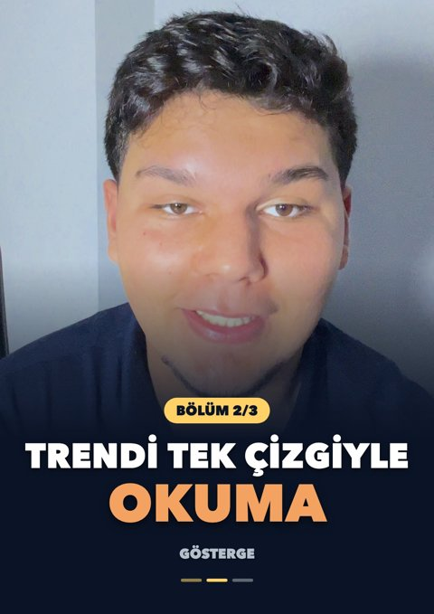

GÖSTERGE 2/3 YENİ
Trend Yönü: yedi tanık
Trendi 7 ölçütle +1/0/−1 puanlar: YÜKSELEN, DÜŞEN ya da YATAY. Fiyat ortalamanın üstünde diye trend yukarı sanmanın önüne geçer.
Videodaki kelime: GÖSTERGE · yorumlara yaz, DM'den gelsin